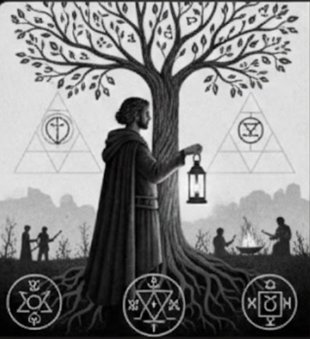
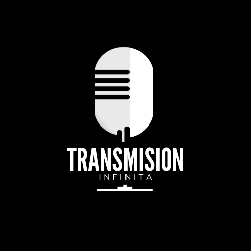
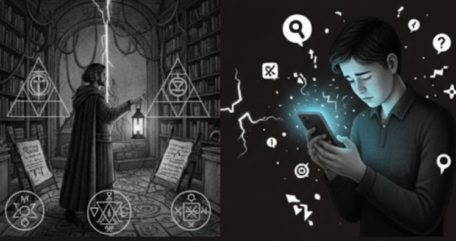
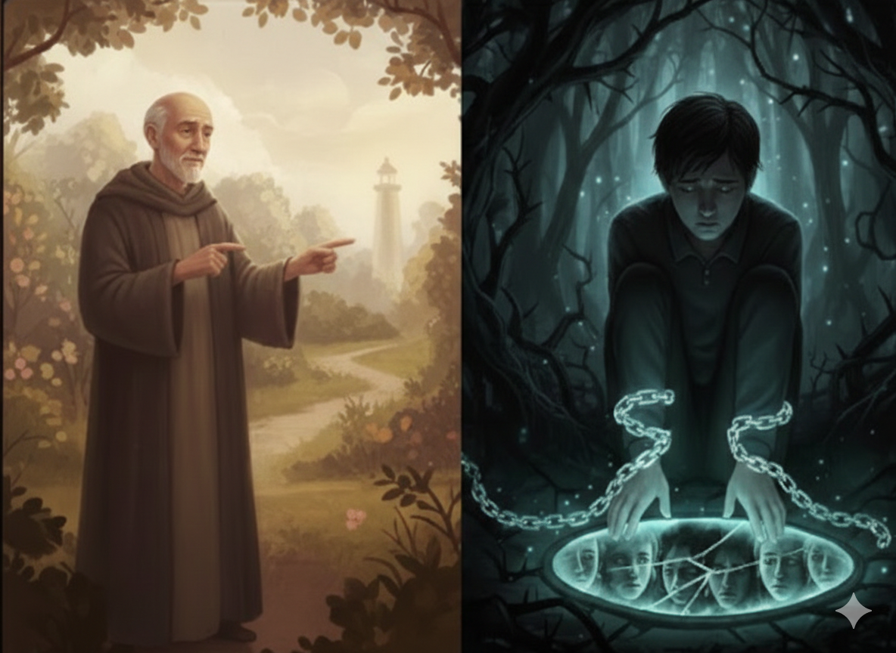

Episodio 0: Este no es un espacio para convencer
Presentación del proyecto, su motivo de existir y la postura ética que lo guía.
Ver episodio
Episodios sobre ética, mente y sentido de vida, sin dogmas ni proselitismo. Disponibles en HD, sin publicidad, sin registro.
Explorar catálogoReflexiones desde el pensamiento antiguo hasta el contemporáneo.
Herramientas simbólicas para la ansiedad, la culpa y el silencio interior.
¿Cómo vivir con sentido en tiempos de fragmentación?
Hermetismo, mitos y metáforas como espejos del alma moderna.

Presentación del proyecto, su motivo de existir y la postura ética que lo guía.
Ver episodio
Cómo el principio de “mentalismo” puede reinterpretarse como regulación emocional.
Ver episodio
Diferencia entre ética interior y castigo psicológico; raíces históricas de la culpa.
Ver episodioEste podcast nace con la intención de transmitir un mensaje humanista enfocado en la reflexión del ser humano, su ética, su mente y su sentido de vida, tomando como referencia el pensamiento simbólico, el hermetismo, la moral y la fraternidad —sin dogmas ni proselitismo.
“Este no es un espacio para convencer a nadie. Venimos a hacernos mejores preguntas sobre lo humano.”
No somos una institución ni representamos doctrina alguna. Abordamos el esoterismo como símbolo y reflexión, no como verdad absoluta. Priorizamos la salud mental, la ética y la fraternidad.